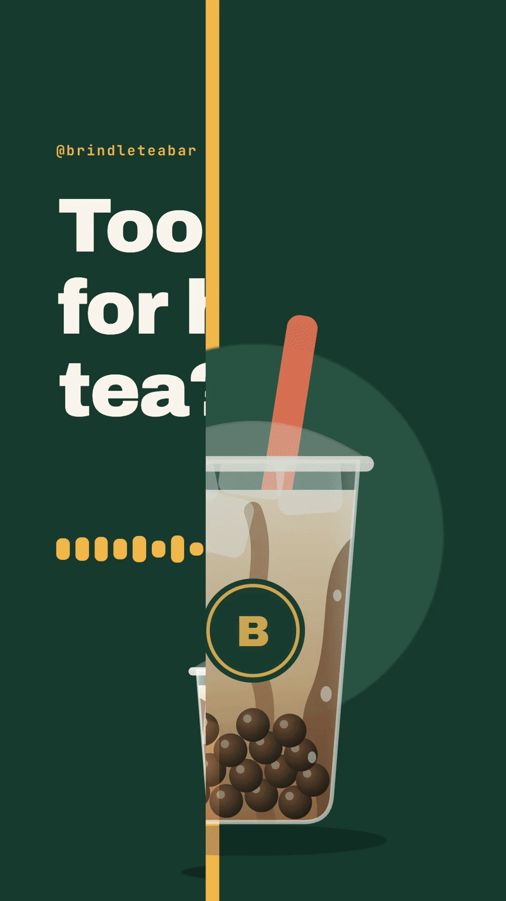
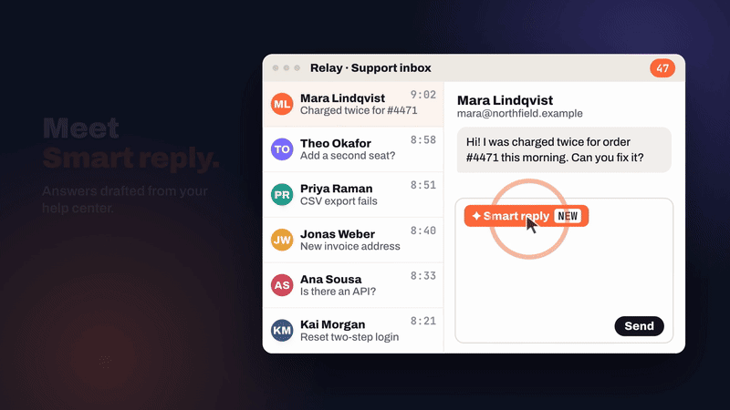
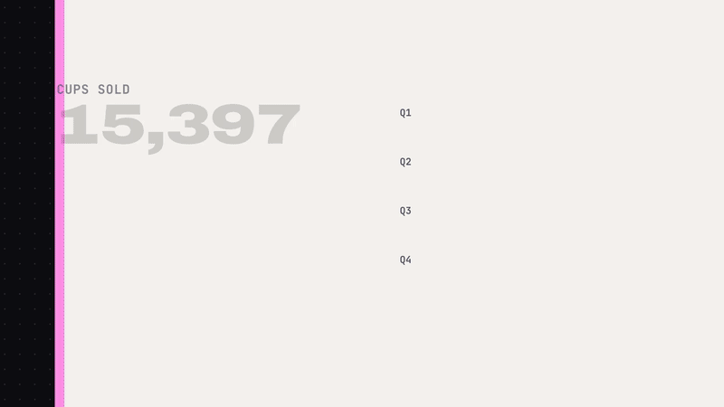
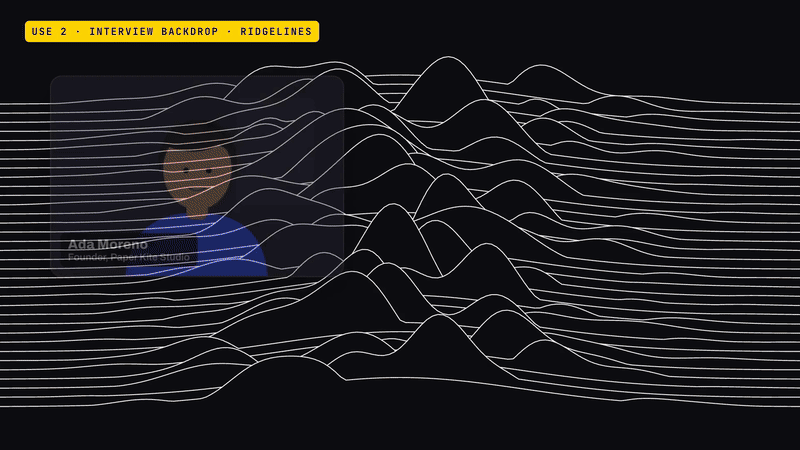
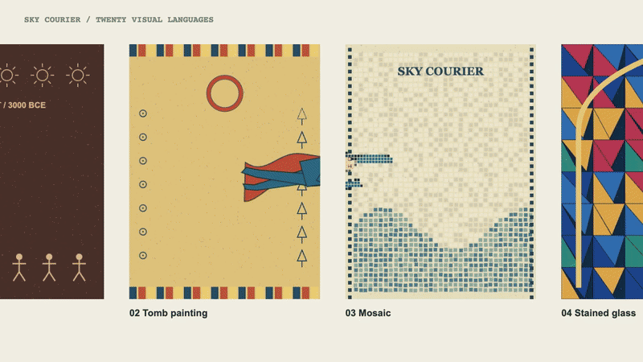
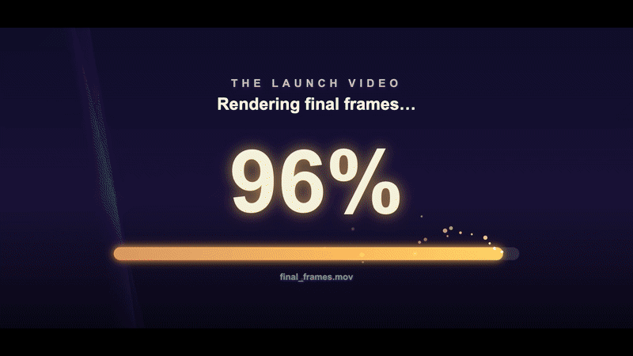
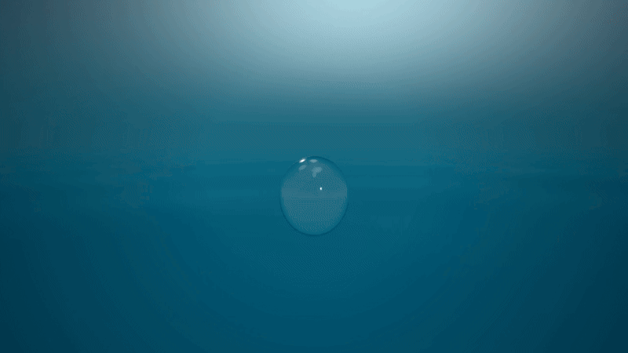

Motion FX Lab
Make social clips, product demos, infographics, animated titles and character sequences as editable web pages, then export them to MP4. Start with a finished example and adapt its copy, data or motion. Write code yourself or work with an AI coding assistant; motion and music are made in code; the configurable cutout characters use original image parts.
Watch what you can make, then choose the effects to build it. The use cases and finished sequences below show applications; the single-effect library shows reusable operations.
Start with the video you need
Four practical examples with editable copy or data. Social and Product deliberately reuse the same fictional booking app: one is a short campaign, the other isolates the interaction. Click a GIF or “Play with sound” for the complete MP4.

A hook, a booking interaction and a closing call to action in a vertical social ad.
Use for: Reels, announcements and short campaigns.
Product demos below use the same app in a closer walkthrough.
Explore: Letter pop · Labels · Scene wipe

Follow a cursor into a booking screen and watch one tap change its state.
Use for: Feature walkthroughs and interface launches.
A focused interaction example, rather than another effect family.

Numbers build into bars, a share-of-total ring and an hourly trend.
Use for: Reports, explainers and data stories.
Sample figures; replace the data and labels together.
Explore: Whip-in title · Letter pop · Counters · Chart drawing · Labels · Scene wipe

Three four-second loops: a flowing gradient, moving ridgelines and a particle network.
Use for: Title backgrounds, transitions and supporting footage.
Each source loop is seamless; the comparison film cuts between them.
Explore: Colour fields · Ridgelines
See effects work together in a film
Three starting points: a journey through art styles, a voiced character scene and a material sequence. Each combines motion, timing and sound around one subject. Watch the complete result here; use the linked effects below as building blocks for your own film.

One courier travels through twenty artworks while its flight and cape remain continuous.
Use for: Character-led journeys and transitions between visual worlds.
Flight, cape motion and camera movement stay continuous across changing artwork.
Explore: Gallery journey · Courier motion · Style portal · Twenty art directions · Low-poly course

Mira asks for the launch video. Pip has made one small, dramatic improvement.
Use for: Voiced character stories, product explainers and comedy shorts.
Speech mouth cues, expressive hands, listening reactions and deliberate camera cuts share one timeline.
Explore: Speech and expression

A drop becomes a crown, changing glass shapes and a dive below the surface.
Use for: Material-led title sequences and transitions between scenes.
Choreographed surfaces and shape changes; the separate liquid studies demonstrate baked fluid motion.
Explore: Splash · Shape blending · Transmission · Underwater scene
All 24 films by layer
1 intro · 4 use cases · 6 demo films · 2 comparisons · 11 effect films. Effect films also play inside their effect cards. Effect links name the library operations each film’s source runs; related links name operations it does not run.
Intro · 1
What the repository makes and how a page becomes an MP4.
| Where | Film and purpose | Watch / edit |
|---|---|---|
| Top of the page | Intro A guided overview that deliberately repeats selected uses and techniques. Effects: Whip-in title 0–2.4 s · Letter pop 0–2.4 s · Timed captions 2.4–6 s · Labels 2.4–6 s · UI camera 6–9.6 s · Counters 9.6–13.2 s · Chart drawing 9.6–13.2 s · Colour fields 13.2–16.8 s · Ridgelines 13.2–16.8 s · Speech and expression 16.8–21.6 s · Audio relief 21.6–22.8 s · Motion fragments 22.8–24 s · Spatial type 24–25.2 s · Volumetric smoke 25.2–26.4 s · Twenty art directions 26.4–33.6 s · Courier motion 26.4–33.6 s · Solid type 33.6–35.4 s · Particle type 35.4–36.6 s · Contours 36.6–37.8 s · Glitch 37.8–38.8 s · Particle type 38.8–40 s · Domino chain 40.8–45.6 s · Labels 50.4–55.2 s · Typewriter 50.4–55.2 s · Scene wipe | Play MP4 · Timeline · GIF |

Use cases · 4
Start from a familiar video format and replace its copy, data or brand.
| Where | Film and purpose | Watch / edit |
|---|---|---|
| Card in Use cases | Social clips Hook, interaction and call to action. Effects: Letter pop · Labels · Scene wipe Related, not in this film: Headline reveal · Timed captions | Play MP4 · Timeline · GIF |
| Card in Use cases | Product demos One interface interaction, explained. Related, not in this film: State reveal · Light sweep | Play MP4 · Timeline · GIF |
| Card in Use cases | Infographics Turn figures into a data story. Effects: Whip-in title · Letter pop · Counters · Chart drawing · Labels · Scene wipe Related, not in this film: Progress ring | Play MP4 · Timeline · GIF |
| Card in Use cases | Animated backgrounds Three reusable background loops. Effects: Colour fields 0–4 s · Ridgelines 4–8 s Related, not in this film: Gradient | Play MP4 · Timeline · GIF |


Demo films · 6
Finished pieces that combine several effects around one subject or story.
| Where | Film and purpose | Watch / edit |
|---|---|---|
| Card in Demo films | One flight. Twenty worlds. One character travels through twenty art directions. Effects: Gallery journey · Courier motion · Style portal · Twenty art directions · Low-poly course 29.9–37 s | Play MP4 · Timeline · GIF |
| Card in Demo films | The Final Final A two-character conversation with speech, gestures, reaction holds and a closing joke. Effects: Speech and expression | Play MP4 · Timeline · GIF |
| Card in Demo films | One drop. Many forms. Authored drop, splash, morph and underwater chapters. Effects: Splash 0–5.4 s · Shape blending 5.4–13.4 s · Transmission 13.4–16.2 s · Underwater scene 16.2–21.6 s | Play MP4 · Timeline · GIF |
| This list only | One dot. Many roles. One orange dot becomes a switch, a letter, a spring trace and a reveal before returning to the start. Effects: Letter reflow 1.2–5.4 s · Spring 4.8–9.6 s · Spatial type 12–14.4 s · Dot reveal 14.4–16.8 s | Play MP4 · Timeline · GIF |
| This list only; to become a use case: Titles & logo stings | One word. Many forms. A word changes form and returns to a readable title. Effects: Solid type 0–5.4 s · Particle type 5.4–9 s · Contours 9–12.6 s · Glitch 12.6–15.6 s · Particle type 15.6–19.2 s | Play MP4 · Timeline · GIF |
| This list only | COUNTERFORM A complete fight with authored action and contact timing. Effects: Dots · Impact · Echoes · Time control 7.8–9.6 s | Play MP4 · Timeline · GIF |


Comparisons · 2
The same input under different treatments, for choosing an effect.
| Where | Film and purpose | Watch / edit |
|---|---|---|
| This list only | Same fight. Eight treatments. Compare eight operations on the same choreography. Effects: Dots 0–4.8 s · Frozen orbit 4.8–9.6 s · Echoes 9.6–14.4 s · Depth scatter 14.4–19.2 s · Impact 19.2–24 s · Time control 24–28.8 s · Image relief 28.8–33.6 s · Surface points 33.6–38.4 s | Play MP4 · Timeline · GIF |
| This list only | One scene. Many eras. The same room/action under eight art treatments. Effects: Eight room treatments | Play MP4 · Timeline · GIF |


Effect films · 11
Full renders of one effect; each also plays inside its effect card.
| Where | Film and purpose | Watch / edit |
|---|---|---|
| Effect card: Volumetric smoke around geometry | Find the Form An extended rendered example of volumetric smoke. Effects: Volumetric smoke | Play MP4 · Timeline · GIF |
| Effect card: Fluid flow and overflow | Overflow Partly filled bowl → rising water → overflow → settling. Effects: Liquid flow | Play MP4 · Timeline · GIF |
| Effect card: Fluid flow and overflow | Slow Gold Inspect liquid contact, stretching and drainage over a ring. Effects: Viscous coating | Play MP4 · Timeline · GIF |
| Effect card: Light-responsive surface hatching | One block. A drawn city. Surface hatching, staged construction and camera travel in one scene. Effects: Surface hatching | Play MP4 · Timeline · GIF |
| Effect card: Source size and soft shadows; to be retired | One light. Different edges. Inspect source size and object height against the shadow. Effects: Soft shadows | Play MP4 · Timeline · GIF |
| Effect cards: Moiré interference, Slit-scan typography, Folding paper ribbon, Caustic light, Holographic foil, Shape morphing | Six optical treatments Six independent looks for choosing a treatment. Effects: Moiré 0–3 s · Slit-scan type 3–6 s · Paper ribbon 6–9 s · Caustic light 9–12 s · Holographic foil 12–15 s · Path morph 15–18 s | Play MP4 · Timeline · GIF |
| Effect cards: Image displacement, 3D domino chain, Orbital particles | Image distortion, collisions and particles Three unrelated operations with separate settings. Effects: Liquid poster 0–7 s · Domino chain 7–16 s · Orbital particles 16–24 s | Play MP4 · Timeline · GIF |
| Effect card: Image relief | Pulse / Form Measured audio changes solid image-cell depth. Effects: Audio relief | Play MP4 · Timeline · GIF |
| Effect card: Motion-driven fragments | Motion / Release Measured image movement emits and directs fragments. Effects: Motion fragments | Play MP4 · Timeline · GIF |
| Effect card: Freeze frame and camera orbit; to be merged into COUNTERFORM | Impact / Orbit A measured score attack cues an authored held 3D pose and animated lighting. Effects: Impact orbit | Play MP4 · Timeline · GIF |
| Effect card: Speech, expression and lip sync | Say it. Mean it. Recorded speech, expressive mouth shapes and authored gestures. Effects: Speech and expression | Play MP4 · Timeline · GIF |


Choose an example. Edit it. Export.
After setting up the repository, edit an example’s words, numbers or timeline and run its build command:
bash video/build.sh examples/product.htmlThe build writes an MP4, a high-quality copy, a poster and the declared GIF preview. Selected films, supporting source archive and rebuild commands. The recorder compares every frame across two independent renders and checks the delivered audio and video.
Single effects to reuse
Each card demonstrates one operation or material response. Use its selector for variations, or filter by what you want to make. All effect previews use 16:9; combined scenes are listed separately below. Replace the sample copy with your own.
Ordered by visual impact: strong materials, depth and transformations first; focused timing and utility effects later. Variants share a family card. How the collection is organised.
Rendering notes
Browser effects run from code; Blender studies replay baked frames with editable source recipes. “Seen in” credits a visual reference rebuilt with original content. The colour-grade technique uses CSS filters and a separate glow; it is not a LUT implementation. The original 3D and shader tiles share one WebGL canvas; the three optical shaders share a second context. Reaction–diffusion draws the same pixels every time on one GPU, but not the same pattern on every GPU.
Open a combined scene to adapt it
These five presets expose reusable scene code. The room preset links to its eight-treatment film. The underwater scene and gallery journey support the featured films; these presets do not add more unique effects.
5 composition presets · expand to preview
How the films are built
The library combines drawing APIs, renderers, simulation libraries and export tools. Original effects use three.js r128; the newer 3D and compute modules pin r180. The tools below support the films and previews on this page.
| Stack | What it is | Why | What it does here |
|---|
A recorded rendering benchmark
Measured on a 56-second, 1,693-frame promo of ours with heavy 3D (the promo itself is not in this repo). Timed from launching the browsers to a finished lossless master. Our first pipeline, default headless Chromium with one browser and page.screenshot, took 399.6 s. In that test, rendering the whole video twice and comparing every frame took 52.9 s: 7.5× faster than the first pipeline. Before that, with only an 8-frame spot check, it took 26.4 s. Encoding both deliverables with every check took another 33.6 s. All measured on 2026-09-28 on an Apple M4 laptop.
In that historical benchmark, past 4 browsers there was no gain: the bottleneck moved to the single ffmpeg process that decoded the PNGs and wrote the master. The table below describes that benchmark, not the current intro file.
| Step | First pipeline | Verified recorder in that test | How it is proven |
|---|---|---|---|
| 3D rendering | SwiftShader (GPU emulated on the CPU) | ANGLE Metal (the Apple M4 GPU) | The browser's WebGL renderer string is read at start; an unexpected SwiftShader fallback stops a GPU run |
| Screenshots | page.screenshot | CDP captureScreenshot with optimizeForSpeed | At 8 fast-moving moments the decoded pixels matched the old method 8/8, with no stale frame |
| Parallelism | 1 browser | 4 independent browsers, frames dealt round-robin | The whole video is rendered a second time with every frame on another browser, and all frames are compared; a frame fails if over 0.01% of plane samples differ by more than 8 levels, or over 20 samples differ by more than 48 levels |
| Master | x264 CRF 17 (lossy) | x264 lossless | Deliverables are compressed once; the master must hold every frame |
| Look | Mean SSIM 0.989 between old and new; the 71 frames under 0.95 are dense particle and dust frames that look identical side by side | ffmpeg ssim, frame by frame | |
| Sound | −21.2 LUFS · −2.1 dBTP · AAC 160 kbps | −14.1 LUFS · −1.6 dBTP · AAC 127 kbps | Limit, then two-pass loudnorm that must report “linear”; the file is measured with ebur128. 160 kbps was over Meta's 128 kbps ceiling |
| High-quality file | none | 24.9 MB · 3.5 Mbps mean · 17.2 Mbps peak second | Meta Reels allows 25 Mbps and 300 MB; moov first, no edit list |
| Web preview | 13.8 MB | 13.9 MB · two-pass 1870 kbps | Over 15 MB, it retries once at a lower rate, then stops |
What the checks caught during development
- A writer-loop bug: too few frames, stop.
- Re-rendered frames differed: GPU edge noise on rotated text. Pixel tolerance handles small GPU edge differences; it does not judge the composition or motion quality. Later, a spot check of 8 frames missed a browser that drew a label wrongly, so every frame is now rendered twice. The label had kept a stale size after a scale animation;
engine.jsnow prevents that. - A decoder deadlock: the frame comparison, the frame counts and every delivery step now have a time limit, so a hang there fails loudly.
- A bad argument: refused before starting.
Left out, and why
- HEVC: the high-quality file has no size pressure and H.264 is enough; H.264 is used for broad browser compatibility.
- GPU benchmarks were measured on macOS. WebGL-only films can use
--cpu; films with WebGPU compute require a compatible GPU adapter.
Tools and authoring choices
Current rendering choices
- Full three.js migration: the original effects keep r128; newer film modules pin r180 without migrating every existing shader.
- Timelines: each frame is calculated directly from time. These examples use the local timeline engine rather than a GSAP runtime.
- HyperFrames: another HTML-to-video framework; the current films use this repository’s existing recorder.
Other workflows and assets
- Remotion: videos use React components; free eligibility and Company License terms depend on the user or organization.
- lygia: its default Prosperity licence covers noncommercial use and a 30-day commercial trial; it is not bundled here.
- Generated speech: the dialogue films use offline Kokoro voices and Rhubarb mouth analysis. Character geometry, performance, scenery and music are authored in code; no generated footage or depth maps are used.